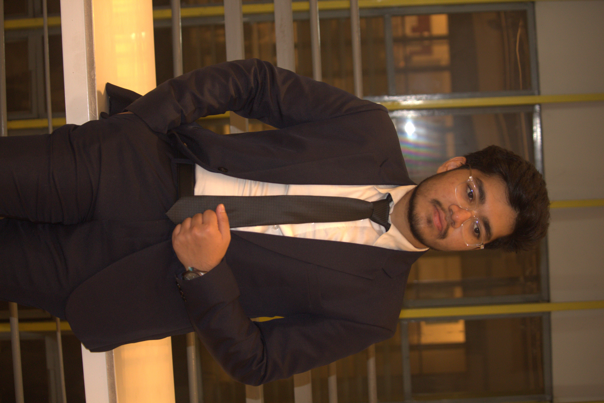

ABUJOR DISHARY SHABBIB

SUMMARY
Enthusiastic and detail-oriented web developer with a strong foundation in front-end technologies, including HTML, CSS, and JavaScript. Adept at transforming design concepts into responsive and user-friendly websites. Committed to writing clean and efficient code, staying updated on industry trends, and delivering high-quality solutions. Collaborative team player with a passion for problem-solving and continuous learning.
SKILLS
- Front-End Development
- JavaScript Frameworks
- Responsive Design
- Version Control
- Problem-Solving and Debugging
EXPERIENCE
Student Tutor
BRAC University | Mohakhali, Dhaka - 1212
June 23 - Present
Administrative Assistant
Apple.Inc | Cupertino, CA
January 32 - february 30
EDUCATION
BRAC University, Mohakhali – 1212
January 22 – Present
Bachelors of Science in Computer Science and Engineering (CGPA-3.88)
Birshreshtha Noor Mohammad public college, Peelkhana, Dhaka
June 2018- April 2020 (GPA -5.00, Science)
Adarsha School Narayanganj
January 2015-February 2018 (GPA – 5.00, Science)
AWARDS AND CERTIFICATIONS
Academic Excellence Award | Adarsha School Narayanganj | 2018
HOBBIES
- Reading
- Trvelling
- Sports
- Badminton
- Cricket
PROJECTS
Project 1 (Noob level)
Project 2(Noob level)
More info
Contact Me
About Me